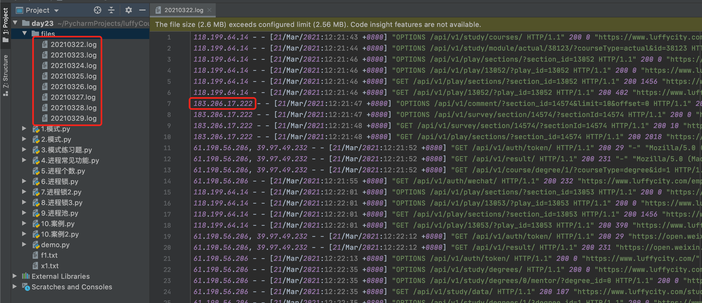

day23 并发编程（下）¶
课程目标：掌握多进程开发的相关知识点并初步认识协程。
今日概要：
- 多进程开发
- 进程之间数据共享
- 进程锁
- 进程池
- 协程
1. 多进程开发¶
进程是计算机中资源分配的最小单元；一个进程中可以有多个线程，同一个进程中的线程共享资源；
进程与进程之间则是相互隔离。
Python中通过多进程可以利用CPU的多核优势，计算密集型操作适用于多进程。
1.1 进程介绍¶
import multiprocessing
def task():
pass
if __name__ == '__main__':
p1 = multiprocessing.Process(target=task)
p1.start()
from multiprocessing import Process
def task(arg):
pass
def run():
p = multiprocessing.Process(target=task, args=('xxx',))
p.start()
if __name__ == '__main__':
run()
关于在Python中基于multiprocessing模块操作的进程：
Depending on the platform, multiprocessing supports three ways to start a process. These start methods are
- fork，【“拷贝”几乎所有资源】【支持文件对象/线程锁等传参】【unix】【任意位置开始】【快】
The parent process uses
os.fork()to fork the Python interpreter. The child process, when it begins, is effectively identical to the parent process. All resources of the parent are inherited by the child process. Note that safely forking a multithreaded process is problematic.Available on Unix only. The default on Unix.
- spawn，【run参数传必备资源】【不支持文件对象/线程锁等传参】【unix、win】【main代码块开始】【慢】
The parent process starts a fresh python interpreter process. The child process will only inherit those resources necessary to run the process object’s
run()method. In particular, unnecessary file descriptors and handles from the parent process will not be inherited. Starting a process using this method is rather slow compared to using fork or forkserver.Available on Unix and Windows. The default on Windows and macOS.
- forkserver，【run参数传必备资源】【不支持文件对象/线程锁等传参】【部分unix】【main代码块开始】
When the program starts and selects the forkserver start method, a server process is started. From then on, whenever a new process is needed, the parent process connects to the server and requests that it fork a new process. The fork server process is single threaded so it is safe for it to use
os.fork(). No unnecessary resources are inherited.Available on Unix platforms which support passing file descriptors over Unix pipes.
Changed in version 3.8: On macOS, the spawn start method is now the default. The fork start method should be considered unsafe as it can lead to crashes of the subprocess. See bpo-33725.
Changed in version 3.4: spawn added on all unix platforms, and forkserver added for some unix platforms. Child processes no longer inherit all of the parents inheritable handles on Windows.
On Unix using the spawn or forkserver start methods will also start a resource tracker process which tracks the unlinked named system resources (such as named semaphores or SharedMemory objects) created by processes of the program. When all processes have exited the resource tracker unlinks any remaining tracked object. Usually there should be none, but if a process was killed by a signal there may be some “leaked” resources. (Neither leaked semaphores nor shared memory segments will be automatically unlinked until the next reboot. This is problematic for both objects because the system allows only a limited number of named semaphores, and shared memory segments occupy some space in the main memory.)
官方文档：https://docs.python.org/3/library/multiprocessing.html
- 示例1
import multiprocessing
import time
'''
def task():
print(name)
name.append(123)
if __name__ == '__main__':
multiprocessing.set_start_method("fork") # fork、spawn、forkserver
name = []
p1 = multiprocessing.Process(target=task)
p1.start()
time.sleep(2)
print(name) # [] 子进程操作没改变主进程变量数据
'''
'''
def task():
print(name) # [123] fork模式拷贝了主进程运行前的所有资源
if __name__ == '__main__':
multiprocessing.set_start_method("fork") # fork、spawn、forkserver
name = []
name.append(123)
p1 = multiprocessing.Process(target=task)
p1.start()
'''
"""
def task():
print(name) # []
if __name__ == '__main__':
multiprocessing.set_start_method("fork") # fork、spawn、forkserver
name = []
p1 = multiprocessing.Process(target=task)
p1.start()
name.append(123)
"""
- 示例2
import multiprocessing
def task():
print(name) #[]
print(file_object) #<_io.TextIOWrapper name='x1.txt' mode='a+' encoding='utf-8'>
if __name__ == '__main__':
multiprocessing.set_start_method("fork") # fork、spawn、forkserver
name = []
file_object = open('x1.txt', mode='a+', encoding='utf-8')
p1 = multiprocessing.Process(target=task)
p1.start()
案例：
import multiprocessing
def task():
print(name)
file_object.write("alex\n")
file_object.flush() # 武沛齐 alex
if __name__ == '__main__':
multiprocessing.set_start_method("fork")
name = []
file_object = open('x1.txt', mode='a+', encoding='utf-8')
file_object.write("武沛齐\n") #当前主进程 在内存中没有flush进硬盘
p1 = multiprocessing.Process(target=task) #task方法放进子进程，同时拷贝主进程所有资源进子进程
p1.start() # 子进程运行
# 子进程结束后 刷进文件 武沛齐 alex
# 主进程待子进程结束后， 主进程的 file_object 结束了写入一个 武沛齐
'''
武沛齐
alex
武沛齐
'''
import multiprocessing
def task():
print(name)
file_object.write("alex\n")
file_object.flush()
if __name__ == '__main__':
multiprocessing.set_start_method("fork")
name = []
file_object = open('x1.txt', mode='a+', encoding='utf-8')
file_object.write("武沛齐\n")
file_object.flush()
p1 = multiprocessing.Process(target=task) # 是拷贝了文件对象进子进程，但是内存中是没值的。因为已经flush进硬盘里了
p1.start()
"""
武沛齐
alex
"""
import multiprocessing
import threading
import time
def func():
print("来了")
with lock:
print(666)
time.sleep(1)
def task():
# 拷贝的锁也是被申请走的状态
# 被谁申请走了? 被子进程中的主线程申请走了
for i in range(10):
t = threading.Thread(target=func)
t.start()
time.sleep(2)
lock.release()
if __name__ == '__main__':
multiprocessing.set_start_method("fork")
name = []
lock = threading.RLock()
lock.acquire()
# print(lock)
# lock.acquire() # 申请锁
# print(lock)
# lock.release() #释放锁
# print(lock)
# lock.acquire() # 申请锁
# print(lock)
p1 = multiprocessing.Process(target=task)
p1.start()
1.2 常见功能¶
进程的常见方法：
-
p.start()，当前进程准备就绪，等待被CPU调度（工作单元其实是进程中的线程）。 -
p.join()，等待当前进程的任务执行完毕后再向下继续执行。
import time
from multiprocessing import Process
import multiprocessing
def task(arg):
time.sleep(2)
print("执行中...")
if __name__ == '__main__':
multiprocessing.set_start_method("spawn")
p = Process(target=task, args=('xxx',))
p.start()
p.join() #等待子进程运行结束再往下运行
print("继续执行...")
-
p.daemon = 布尔值，守护进程（必须放在start之前） -
p.daemon =True，设置为守护进程，主进程执行完毕后，子进程也自动关闭。 p.daemon =False，设置为非守护进程，主进程等待子进程，子进程执行完毕后，主进程才结束。
import time
from multiprocessing import Process
import multiprocessing
def task(arg):
time.sleep(2)
print("执行中...")
if __name__ == '__main__':
multiprocessing.set_start_method("spawn")
p = Process(target=task, args=('xxx',))
p.daemon = True #主进程结束 子进程也结束。
p.start()
print("继续执行...")
- 进程的名称的设置和获取
import os
import time
import threading
import multiprocessing
def func():
time.sleep(3)
def task(arg):
for i in range(10):
t = threading.Thread(target=func)
t.start()
print(os.getpid(), os.getppid()) #ppid 父进程id
print("线程个数", len(threading.enumerate()))
time.sleep(2)
print("当前进程的名称：", multiprocessing.current_process().name)
if __name__ == '__main__':
print(os.getpid())
multiprocessing.set_start_method("spawn")
p = multiprocessing.Process(target=task, args=('xxx',))
p.name = "哈哈哈哈"
p.start()
print("继续执行...")
- 自定义进程类，直接将线程需要做的事写到run方法中。
import multiprocessing
class MyProcess(multiprocessing.Process): #继承
def run(self):
print('执行此进程', self._args)
if __name__ == '__main__':
multiprocessing.set_start_method("spawn")
p = MyProcess(args=('xxx',))
p.start()
print("继续执行...")
- CPU个数，程序一般创建多少个进程？（利用CPU多核优势）。
import multiprocessing
if __name__ == '__main__':
count = multiprocessing.cpu_count()
for i in range(count - 1):
p = multiprocessing.Process(target=xxxx)
p.start()
2.进程间数据的共享¶
进程是资源分配的最小单元，每个进程中都维护自己独立的数据，不共享。
import multiprocessing
def task(data):
data.append(666)
if __name__ == '__main__':
data_list = []
p = multiprocessing.Process(target=task, args=(data_list,))
p.start()
p.join()
print("主进程：", data_list) # []
如果想要让他们之间进行共享，则可以借助一些特殊的东西来实现。
2.1 共享¶
Shared memory
Data can be stored in a shared memory map using Value or Array. For example, the following code
'c': ctypes.c_char, 'u': ctypes.c_wchar,
'b': ctypes.c_byte, 'B': ctypes.c_ubyte,
'h': ctypes.c_short, 'H': ctypes.c_ushort,
'i': ctypes.c_int, 'I': ctypes.c_uint, （其u表示无符号）
'l': ctypes.c_long, 'L': ctypes.c_ulong,
'f': ctypes.c_float, 'd': ctypes.c_double
from multiprocessing import Process, Value, Array
def func(n, m1, m2):
n.value = 888
m1.value = 'a'.encode('utf-8')
m2.value = "武"
if __name__ == '__main__':
num = Value('i', 666) # i 表示创建的是 int类型
v1 = Value('c') # c char类型
v2 = Value('u') # u 一个字符 也可以是中文字符
p = Process(target=func, args=(num, v1, v2))
p.start()
p.join()
print(num.value) # 888
print(v1.value) # a
print(v2.value) # 武
from multiprocessing import Process, Value, Array
def f(data_array):
data_array[0] = 666
if __name__ == '__main__':
arr = Array('i', [11, 22, 33, 44]) # 数组：i表示元素类型必须是int; 也限定了就这4个数据。
p = Process(target=f, args=(arr,))
p.start()
p.join()
print(arr[:]) #[666, 22, 33, 44]
Server process
A manager object returned by Manager() controls a server process which holds Python objects and allows other processes to manipulate them using proxies.
from multiprocessing import Process, Manager
def f(d, l):
d[1] = '1'
d['2'] = 2
d[0.25] = None
l.append(666)
if __name__ == '__main__':
with Manager() as manager:
d = manager.dict() #创建了 特殊的字典， 实现子进程资源共享
l = manager.list() #创建了 特殊的列表 实现子进程资源共享
p = Process(target=f, args=(d, l))
p.start()
p.join()
print(d) #{1: '1', '2': 2, 0.25: None}
print(l) #[666]
2.2 交换¶
multiprocessing supports two types of communication channel between processes
Queues
The Queue class is a near clone of queue.Queue. For example
import multiprocessing
def task(q):
for i in range(10):
q.put(i) #放入队列里 主线程那用get获取
if __name__ == '__main__':
queue = multiprocessing.Queue() #创建队列 对象 队列特点 先进先出
p = multiprocessing.Process(target=task, args=(queue,))
p.start()
p.join()
print("主进程")
print(queue.get()) #从队列里取数据
print(queue.get())
print(queue.get())
print(queue.get())
print(queue.get())
Pipes
The Pipe() function returns a pair of connection objects connected by a pipe which by default is duplex (two-way). For example:
import time
import multiprocessing
def task(conn):
time.sleep(1)
conn.send([111, 22, 33, 44]) #将数据发给 Parent_conn
data = conn.recv() # 阻塞 接收 parent_conn 发来的数据
print("子进程接收:", data)
time.sleep(2)
if __name__ == '__main__':
parent_conn, child_conn = multiprocessing.Pipe() # Pipe 两个管道。
p = multiprocessing.Process(target=task, args=(child_conn,)) #创建一个进程 ，放进函数task 将child_conn管道放进
p.start()
info = parent_conn.recv() # 阻塞 等待child_conn 发数据过来
print("主进程接收：", info)
parent_conn.send(666) #发送数据给child_conn
上述都是Python内部提供的进程之间数据共享和交换的机制，作为了解即可，在项目开发中很少使用，后期项目中一般会借助第三方的来做资源的共享，例如：MySQL、redis等。
3. 进程锁¶
如果多个进程抢占式去做某些操作时候，为了防止操作出问题，可以通过进程锁来避免。
import time
from multiprocessing import Process, Value, Array
def func(n, ):
n.value = n.value + 1
if __name__ == '__main__':
num = Value('i', 0)
for i in range(20):
p = Process(target=func, args=(num,))
p.start()
time.sleep(3)
print(num.value) # 每次结果不一样
import time
from multiprocessing import Process, Manager
def f(d, ):
d[1] += 1
if __name__ == '__main__':
with Manager() as manager:
d = manager.dict()
d[1] = 0
for i in range(20):
p = Process(target=f, args=(d,))
p.start()
time.sleep(3)
print(d) #每次结果不一样
import time
import multiprocessing
def task():
# 假设文件中保存的内容就是一个值：10
with open('f1.txt', mode='r', encoding='utf-8') as f:
current_num = int(f.read())
print("排队抢票了")
time.sleep(1)
current_num -= 1
with open('f1.txt', mode='w', encoding='utf-8') as f:
f.write(str(current_num))
if __name__ == '__main__':
for i in range(20):
p = multiprocessing.Process(target=task)
p.start()
#20次才减一次，
很显然，多进程在操作时就会出问题，此时就需要锁来介入：
import time
import multiprocessing
def task(lock):
print("开始")
lock.acquire() #进程锁上
# 假设文件中保存的内容就是一个值：10
with open('f1.txt', mode='r', encoding='utf-8') as f:
current_num = int(f.read())
print("排队抢票了")
time.sleep(0.5)
current_num -= 1
with open('f1.txt', mode='w', encoding='utf-8') as f:
f.write(str(current_num))
lock.release() #释放锁
if __name__ == '__main__':
multiprocessing.set_start_method("spawn") #设置进程对象启动方式
lock = multiprocessing.RLock() # 进程锁
for i in range(10):
p = multiprocessing.Process(target=task, args=(lock,))
p.start()
# spawn模式，需要特殊处理。 没有这句运行会报错
time.sleep(7)
import time
import multiprocessing
import os
def task(lock):
print("开始")
lock.acquire()
# 假设文件中保存的内容就是一个值：10
with open('f1.txt', mode='r', encoding='utf-8') as f:
current_num = int(f.read())
print(os.getpid(), "排队抢票了")
time.sleep(0.5)
current_num -= 1
with open('f1.txt', mode='w', encoding='utf-8') as f:
f.write(str(current_num))
lock.release()
if __name__ == '__main__':
multiprocessing.set_start_method("spawn")
lock = multiprocessing.RLock()
process_list = []
for i in range(10):
p = multiprocessing.Process(target=task, args=(lock,))
p.start()
process_list.append(p)
# spawn模式，需要特殊处理。
for item in process_list:
item.join()
import time
import multiprocessing
def task(lock):
print("开始")
lock.acquire()
# 假设文件中保存的内容就是一个值：10
with open('f1.txt', mode='r', encoding='utf-8') as f:
current_num = int(f.read())
print("排队抢票了")
time.sleep(1)
current_num -= 1
with open('f1.txt', mode='w', encoding='utf-8') as f:
f.write(str(current_num))
lock.release()
if __name__ == '__main__':
multiprocessing.set_start_method('fork')
lock = multiprocessing.RLock()
for i in range(10):
p = multiprocessing.Process(target=task, args=(lock,))
p.start()
4. 进程池¶
import time
from concurrent.futures import ProcessPoolExecutor, ThreadPoolExecutor
def task(num):
print("执行", num)
time.sleep(2)
if __name__ == '__main__':
# 修改模式
pool = ProcessPoolExecutor(4)
for i in range(10):
pool.submit(task, i)
print(1)
print(2)
import time
from concurrent.futures import ProcessPoolExecutor
def task(num):
print("执行", num)
time.sleep(2)
if __name__ == '__main__':
pool = ProcessPoolExecutor(4)
for i in range(10):
pool.submit(task, i)
# 等待进程池中的任务都执行完毕后，再继续往后执行。
pool.shutdown(True)
print(1)
import time
from concurrent.futures import ProcessPoolExecutor
import multiprocessing
def task(num):
print("执行", num)
time.sleep(2)
return num
def done(res):
print(multiprocessing.current_process())
time.sleep(1)
print(res.result())
time.sleep(1)
if __name__ == '__main__':
pool = ProcessPoolExecutor(4)
for i in range(10):
fur = pool.submit(task, i)
fur.add_done_callback(done) # done的调用由主进程处理（与线程池不同）
print(multiprocessing.current_process())
pool.shutdown(True)
注意：如果在进程池中要使用进程锁，则需要基于Manager中的Lock和RLock来实现。
import time
import multiprocessing
from concurrent.futures.process import ProcessPoolExecutor
def task(lock):
print("开始")
# lock.acquire()
# lock.relase()
with lock:
# 假设文件中保存的内容就是一个值：10
with open('f1.txt', mode='r', encoding='utf-8') as f:
current_num = int(f.read())
print("排队抢票了")
time.sleep(1)
current_num -= 1
with open('f1.txt', mode='w', encoding='utf-8') as f:
f.write(str(current_num))
if __name__ == '__main__':
pool = ProcessPoolExecutor()
# lock_object = multiprocessing.RLock() # 不能使用
manager = multiprocessing.Manager()
lock_object = manager.RLock() # Lock
for i in range(10):
pool.submit(task, lock_object)
案例：计算每天用户访问情况。

- 示例1
import os
import time
from concurrent.futures import ProcessPoolExecutor
from multiprocessing import Manager
def task(file_name, count_dict):
ip_set = set()
total_count = 0
ip_count = 0
file_path = os.path.join("files", file_name)
file_object = open(file_path, mode='r', encoding='utf-8')
for line in file_object:
if not line.strip():
continue
user_ip = line.split(" - -", maxsplit=1)[0].split(",")[0]
total_count += 1
if user_ip in ip_set:
continue
ip_count += 1
ip_set.add(user_ip)
count_dict[file_name] = {"total": total_count, 'ip': ip_count}
time.sleep(1)
def run():
# 根据目录读取文件并初始化字典
"""
1.读取目录下所有的文件，每个进程处理一个文件。
"""
pool = ProcessPoolExecutor(4)
with Manager() as manager:
"""
count_dict={
"20210322.log":{"total":10000,'ip':800},
}
"""
count_dict = manager.dict()
for file_name in os.listdir("files"):
pool.submit(task, file_name, count_dict)
pool.shutdown(True)
for k, v in count_dict.items():
print(k, v)
if __name__ == '__main__':
run()
- 示例2
import os
import time
from concurrent.futures import ProcessPoolExecutor
def task(file_name):
ip_set = set()
total_count = 0
ip_count = 0
file_path = os.path.join("files", file_name)
file_object = open(file_path, mode='r', encoding='utf-8',errors='ignore') #,errors='ignore' 输出前报错增加的
for line in file_object:
if not line.strip():
continue
user_ip = line.split(" - -", maxsplit=1)[0].split(",")[0]
total_count += 1
if user_ip in ip_set:
continue
ip_count += 1
ip_set.add(user_ip)
time.sleep(1)
return {"total": total_count, 'ip': ip_count}
def outer(info, file_name):
def done(res, *args, **kwargs):
info[file_name] = res.result()
return done
def run():
# 根据目录读取文件并初始化字典
"""
1.读取目录下所有的文件，每个进程处理一个文件。
"""
info = {}
pool = ProcessPoolExecutor(4)
for file_name in os.listdir("files"):
fur = pool.submit(task, file_name)
fur.add_done_callback( outer(info, file_name) ) # 回调函数：主进程
pool.shutdown(True)
for k, v in info.items():
print(k, v)
if __name__ == '__main__':
run()
5. 协程¶
暂时以了解为主。
计算机中提供了：线程、进程 用于实现并发编程（真实存在）。
协程（Coroutine），是程序员通过代码搞出来的一个东西（非真实存在）。
例如：
上述代码是普通的函数定义和执行，按流程分别执行两个函数中的代码，并先后会输出：1、2、3、4。
但如果介入协程技术那么就可以实现函数见代码切换执行，最终输入：1、3、2、4 。
在Python中有多种方式可以实现协程，例如：
- greenlet
from greenlet import greenlet
def func1():
print(1) # 第1步：输出 1
gr2.switch() # 第3步：切换到 func2 函数
print(2) # 第6步：输出 2
gr2.switch() # 第7步：切换到 func2 函数，从上一次执行的位置继续向后执行
def func2():
print(3) # 第4步：输出 3
gr1.switch() # 第5步：切换到 func1 函数，从上一次执行的位置继续向后执行
print(4) # 第8步：输出 4
gr1 = greenlet(func1)
gr2 = greenlet(func2)
gr1.switch() # 第1步：去执行 func1 函数
- yield
def func1():
yield 1
yield from func2()
yield 2
def func2():
yield 3
yield 4
f1 = func1()
for item in f1:
print(item)
虽然上述两种都实现了协程，但这种编写代码的方式没啥意义。
这种来回切换执行，可能反倒让程序的执行速度更慢了（相比较于串行）。
协程如何才能更有意义呢？
不要让用户手动去切换，而是遇到IO操作时能自动切换。
Python在3.4之后推出了asyncio模块 + Python3.5推出async、async语法 ，内部基于协程并且遇到IO请求自动化切换。
import asyncio
async def func1():
print(1)
await asyncio.sleep(2)
print(2)
async def func2():
print(3)
await asyncio.sleep(2)
print(4)
tasks = [
asyncio.ensure_future(func1()),
asyncio.ensure_future(func2())
]
loop = asyncio.get_event_loop()
loop.run_until_complete(asyncio.wait(tasks))
"""
需要先安装：pip3 install aiohttp
"""
import aiohttp
import asyncio
async def fetch(session, url):
print("发送请求：", url)
async with session.get(url, verify_ssl=False) as response:
content = await response.content.read()
file_name = url.rsplit('_')[-1]
with open(file_name, mode='wb') as file_object:
file_object.write(content)
async def main():
async with aiohttp.ClientSession() as session:
url_list = [
'https://www3.autoimg.cn/newsdfs/g26/M02/35/A9/120x90_0_autohomecar__ChsEe12AXQ6AOOH_AAFocMs8nzU621.jpg',
'https://www2.autoimg.cn/newsdfs/g30/M01/3C/E2/120x90_0_autohomecar__ChcCSV2BBICAUntfAADjJFd6800429.jpg',
'https://www3.autoimg.cn/newsdfs/g26/M0B/3C/65/120x90_0_autohomecar__ChcCP12BFCmAIO83AAGq7vK0sGY193.jpg'
]
tasks = [asyncio.create_task(fetch(session, url)) for url in url_list]
await asyncio.wait(tasks)
if __name__ == '__main__':
asyncio.run(main())
通过上述内容发现，在处理IO请求时，协程通过一个线程就可以实现并发的操作。
协程、线程、进程的区别？
线程，是计算机中可以被cpu调度的最小单元。
进程，是计算机资源分配的最小单元（进程为线程提供资源）。
一个进程中可以有多个线程,同一个进程中的线程可以共享此进程中的资源。
由于CPython中GIL的存在：
- 线程，适用于IO密集型操作。
- 进程，适用于计算密集型操作。
协程，协程也可以被称为微线程，是一种用户态内的上下文切换技术，在开发中结合遇到IO自动切换，就可以通过一个线程实现并发操作。
所以，在处理IO操作时，协程比线程更加节省开销（协程的开发难度大一些）。
现在很多Python中的框架都在支持协程，比如：FastAPI、Tornado、Sanic、Django 3、aiohttp等，企业开发使用的也越来越多（目前不是特别多）。
关于协程，目前同学们先了解这些概念即可，更深入的开发、应用 暂时不必过多了解，等大家学了Web框架和爬虫相关知识之后，再来学习和补充效果更佳。有兴趣想要研究的同学可以参考我写的文章和专题视频：
- 文章
- 视频
总结¶
- 了解的进程的几种模式
- 掌握进程和进程池的常见操作
- 进程之间数据共享
- 进程锁
- 协程、进程、线程的区别（概念）